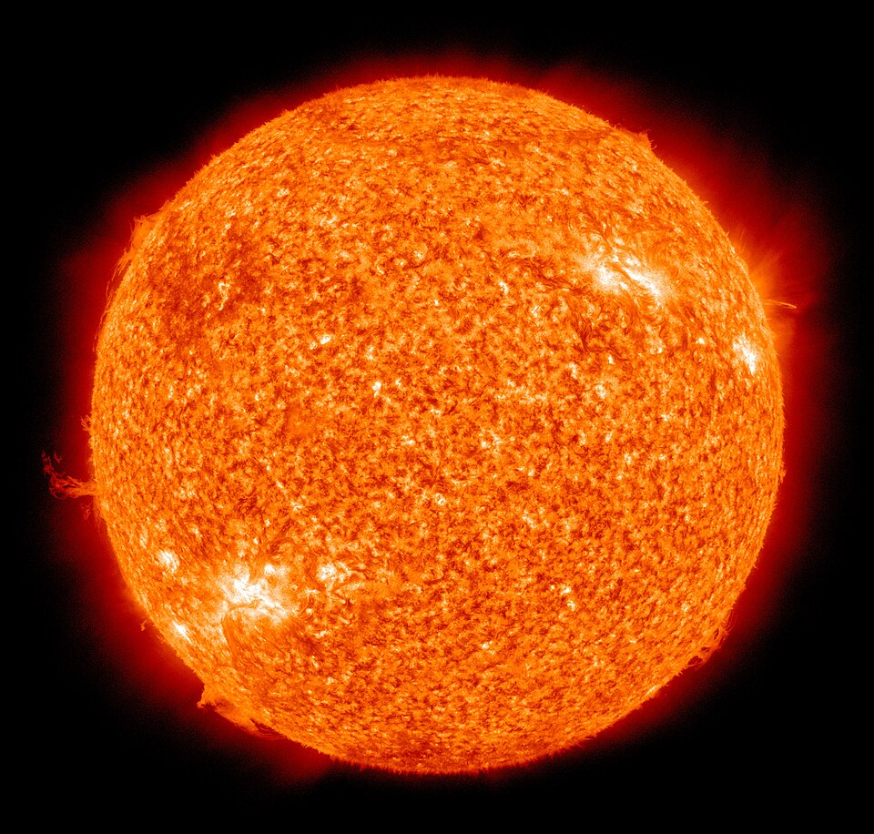
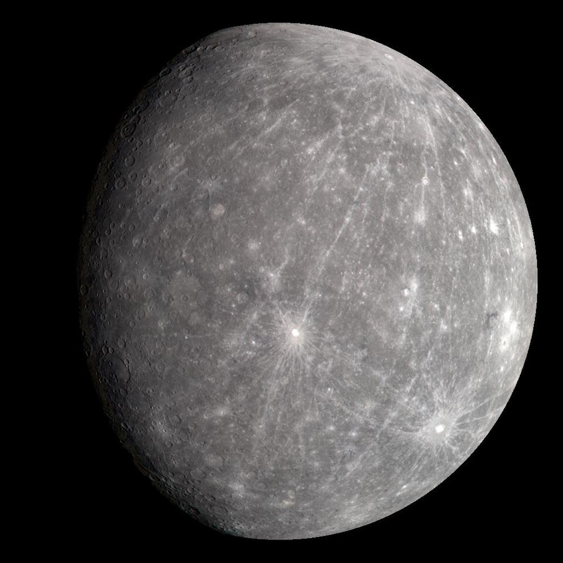
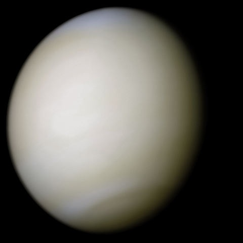
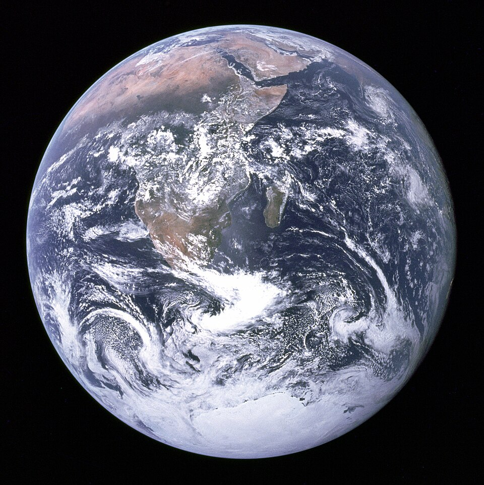
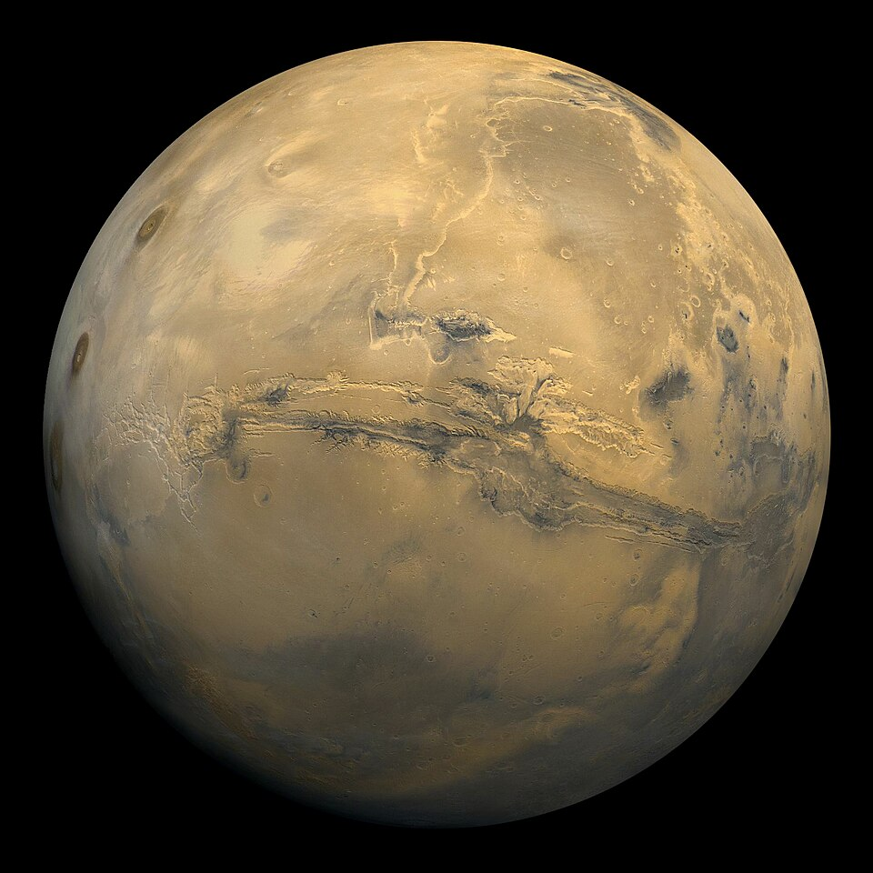
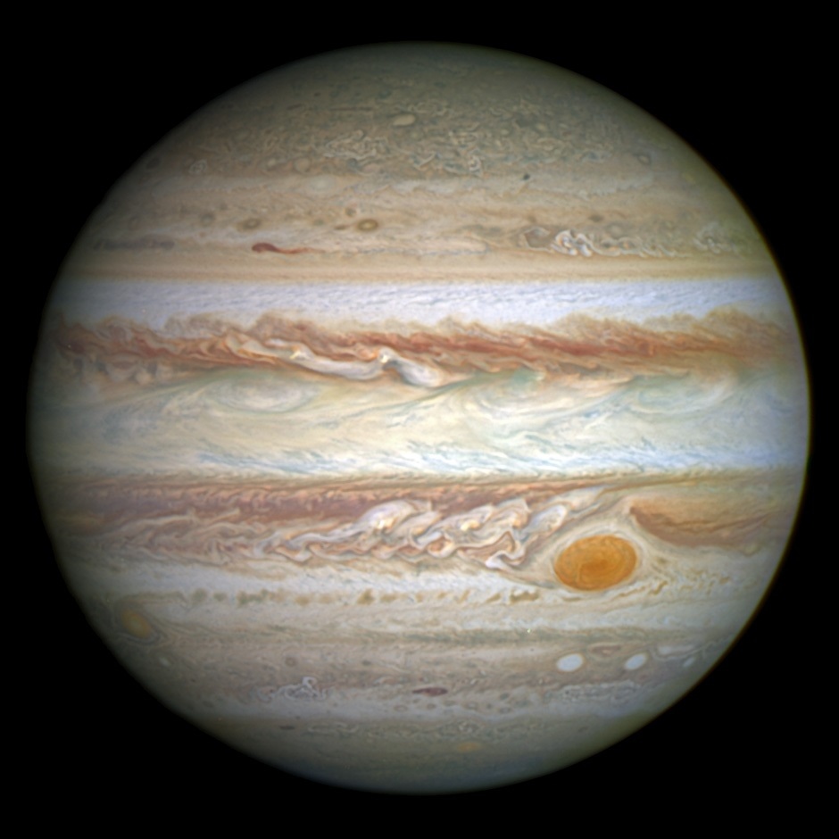
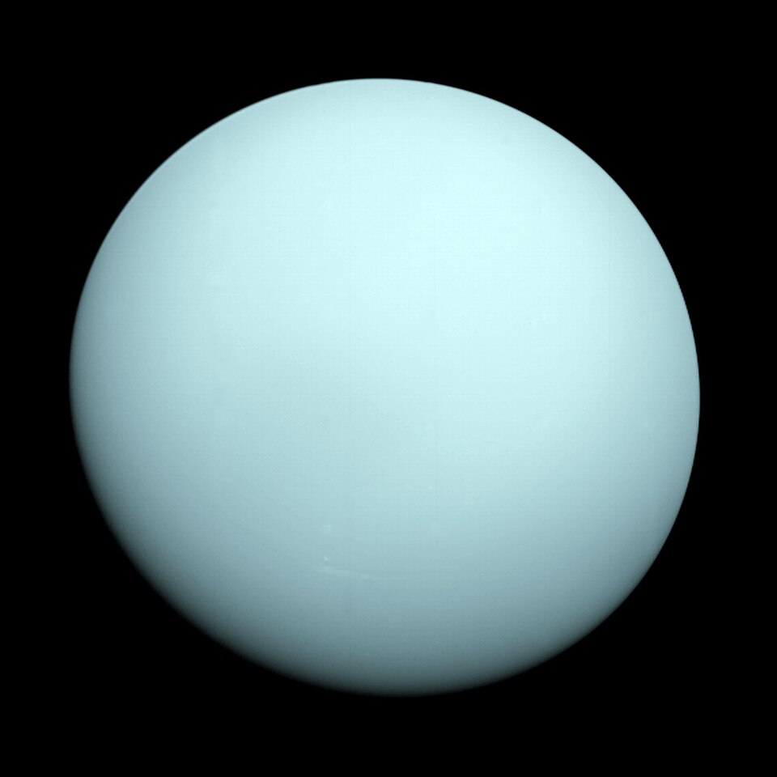
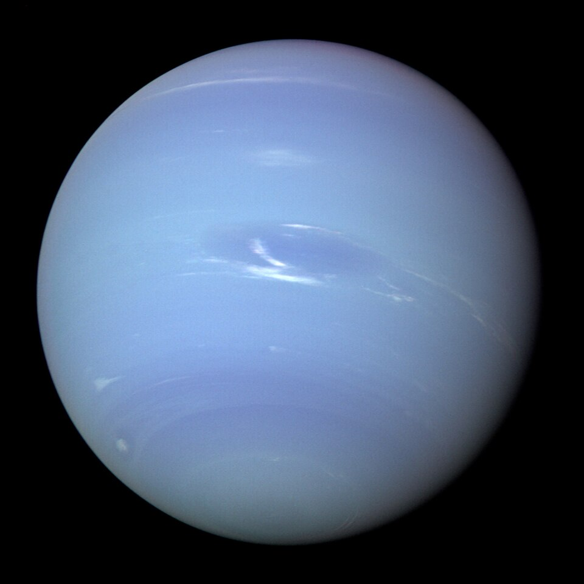

우리의 이웃,
태양계 행성을 만나보세요
태양을 중심으로 돌고 있는 8개의 행성. 뜨거운 수성부터 얼어붙은 해왕성까지, 각 행성의 모습과 특징을 NASA 사진과 함께 살펴봅니다.








숫자로 보는 태양계
태양계는 약 46억 년 전 거대한 가스와 먼지 구름에서 탄생했습니다.
0
행성
0
억 년의 나이
0
태양 지름 (지구의 배)
0
% 태양이 차지하는 질량
행성의 세 가지 종류
태양계 행성은 구성 물질에 따라 크게 세 무리로 나뉩니다.